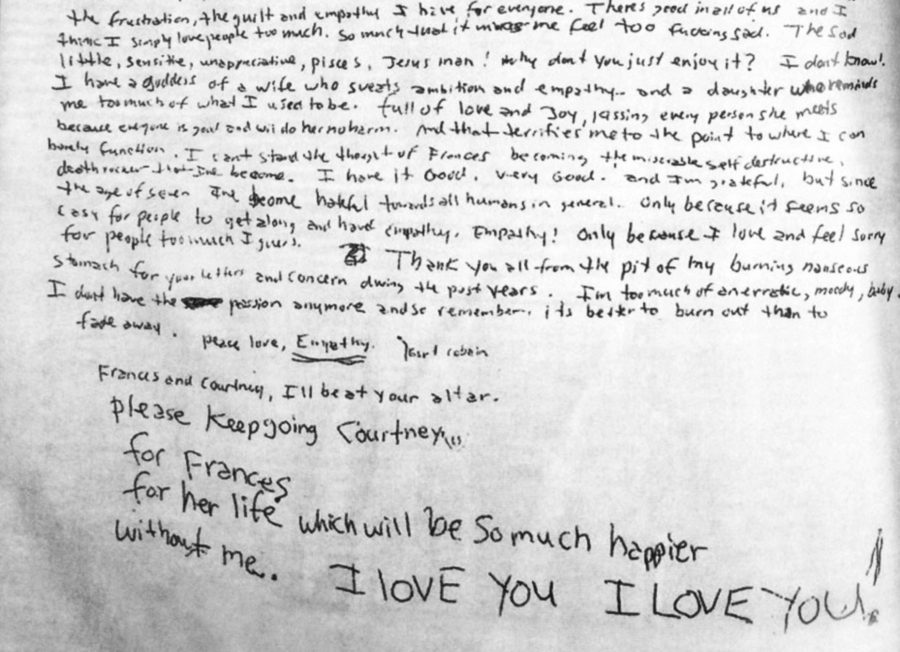

UberDie 夢幻逸品何時問世？——輔助自殺／安樂死的隨手記

Photo Credit: Kurt Cobain 的遺書
最近讀了一本有關輔助自殺研究的書，目前讀到現在發覺有兩個因素讓輔助自殺窒礙難行。
第一，願意執行的醫師很少，因為醫師受的教育就是要拯救病患，無論狀況多糟多慘，也不放棄任何一絲機會。要他們做出讓病患致死的決定，還要親手殺人，違反他們一直以來的信念，對醫師而言切器官以活病患說不定都不比調配藥水看著病患一飲而盡簡單。
也許就跟槍決死刑犯的執行者一樣，由自己持槍結束另一個人的生命並不是一個正常人期望的工作任務之一。
另外一個輔助自殺或安樂死極有爭議的地方是，如果其實自己不想死，但是受迫於社會氛圍，老廢病窮殘醜，這些毫無社會生產力的人們，也許是達爾文社會主義者／種族主義者最希望毀滅的一群，最好丟到焚化爐集體焚燒。有些人如我很樂意被這樣處置，但萬一有些人並不想死呢？所以為了避免老殘窮就該有自我認知，自己到焚化爐排隊去死，這種觀念「傳染」到社會各處，導致不想死的人也被受社會壓力而不得不加入排隊行列，不然可能會受到歧視（是有多缺乏自知之明？），這也是行不通的。
看來，輔助自殺跟安樂死，都不是那麼容易一時半刻可以獲得全民共識，台灣可能等到西元 3090 年都不會有這麼一天，甚至可能所有人都已經活到五百歲，卻還是沒有死亡的權利。那麼，對於我們這些真的非常想死，卻沒有勇氣自殺的人，究竟該怎麼辦？
未來會不會有 UberDie，媒合有謀殺慾的人，跟想死死不了的人，各取所需，滿足各自的慾望，我衷心企盼有這一天的到來。
補充：這本書叫做《The Inevitable: Dispatches on the Right to Die》，中文譯名《生命的非選題：為了追求尊嚴善終，人應該有死亡自主權嗎？》。作者以前曾經擔任 VICE 的記者，拍攝一系列關於死亡自主權的影片，想瞭解這個議題的朋友，這本書應該是不錯的起點。
最近跟心理師談，我覺得我的狀況比以前明亮煥發，其中一個原因是，我很篤定的決定活到 40 歲就要去死，什麼方式還不確定。瑞士安樂死並不是有錢就能搞定的，除了錢之外，它必須經過非常嚴苛的生理跟精神鑑定，我肯定會被駁回。
我其實今年憂鬱症的狀況已經趨緩很多，我依然渴望自己決定死亡時間。
自從我決定自己就是要活到 40 歲就好之後，我整個人變得非積極，只剩下 1000 天左右，我簡直每天都過得很充實，也安排好這 1000 天到底要做哪些事情。我變得前所未有的快樂開朗，不再被陰鬱全天候籠罩（以前從未體會過「快樂」兩個字），而是有充足的動力去做我想做的事情。我活得更好心胸更開闊，願意嘗試更多以前畏縮的事務。但這一切的前提是，我需要掌握自己的死亡時間。
希望到時先進國家已經針對輔助自殺放寬（我就不寄望台灣了）。否則，我真的需要用這 1000 天中的 50 天來練習殺。依靠自己的力量，確保自己死得了。
//
最近付費買了 ChatGPT4o，請它潤飾了這篇短文，結果如下：
最近，我閱讀了一本關於輔助自殺研究的書，書名為《The Inevitable: Dispatches on the Right to Die》。這本書引發了我對這個極具爭議性議題的深思。目前讀到的部分揭示了兩個阻礙輔助自殺實施的主要因素。
首先，願意執行輔助自殺的醫師非常稀少。醫師的職業信念是救死扶傷，無論病情多麼嚴峻，他們都不輕言放棄任何一絲希望。要他們親手幫助病患結束生命，這與他們多年來所受的教育和職業道德相違背。這種心理障礙類似於槍決死刑犯的執行者，他們要親手結束另一個人的生命，這並非一個正常人所期望的工作任務之一。
其次，輔助自殺或安樂死的社會爭議巨大。假設某些人其實不想死，但因為社會氛圍的壓力而感到被迫接受輔助自殺。老弱病殘這些被認為沒有生產力的人，可能會成為達爾文社會主義者或種族主義者眼中應該被淘汰的對象。如果這種觀念在社會中蔓延，甚至可能導致不願意自殺的人也因為社會壓力而被迫選擇死亡，這是我們必須謹慎防範的。
在台灣，輔助自殺和安樂死要達到社會共識並非易事。或許在遙遠的未來，甚至到了西元 3090 年，這一問題依然無法解決。即便人類已經能夠活到五百歲，死亡的權利依然遙不可及。對於那些真正渴望死亡但缺乏勇氣自殺的人而言，未來是否會出現一個如UberSuicide的平臺，將有謀殺慾望的人與希望結束生命的人配對，各取所需，這樣的構想或許遙不可及，但卻反映了對死亡自主權的深切渴望。
最近與心理師的交談中，我的情緒狀況有所改善。部分原因是我決定在40歲時結束自己的生命，儘管具體方式尚未確定。瑞士的安樂死政策雖然成熟，但需經過嚴格的生理和心理評估，我可能會被駁回。然而，自從我下定決心要在40歲時結束生命後，我的生活變得前所未有的充實和有目標。在僅剩的約一千天裡，我每日都過得非常充實，安排了各種計劃。我變得更積極、更開朗，不再被陰鬱籠罩，反而充滿動力去完成我想做的事情。
這一切的前提是，我需要掌握自己的死亡時間。我希望在先進國家，輔助自殺的法律能有所放寬，讓那些真正渴望掌控自己生命終結時間的人能夠有尊嚴地離開。如果台灣無法達到這一點，也許我需要用這一千天中的部分時間來尋求其他方法，以確保自己能夠在想要的時間內結束生命。